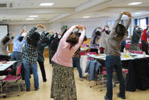
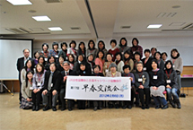
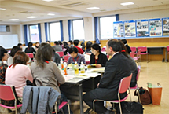

- 【日 時】
- 2月6日(月)10:30～14:00
- 【場 所】
- さいたまコープ コーププラザ浦和3階会議室
- 【出席者】
- JA埼玉県女性組織協議会10名
- 埼玉県生協ネットワーク協議会42名
|  |
|  |
|  |
1．挨拶
生協ネットワーク協議会会長の歓迎の挨拶、JA女性協副会長よりご挨拶、県生協連副会長よりIYC埼玉実行委員会についてとご挨拶をいただきました。
2．震災後の生協の取り組み 講師：日本生協連
DVD視聴後、生協の緊急支援活動、生活・事業再建に向けた取り組み、今後の課題について、この1年の振り返りをお話ししていただきました。
3．2012国際協同組合年について 講師：日本生協連
リーフレットを用い、協同組合とは、目指すもの、現状と課題、組合員の役割り等の説明をしていただきました。
4．JA埼玉県女性組織協議会の取り組み副会長
協議会の組織状況と活動等のご報告をいただきました。
5．昼食
6．各生協のミニミニ紹介と医療生協さいたまによる健康体操
7．6グループで交流、それぞれの今後の取り組みなどを意見交換しました。